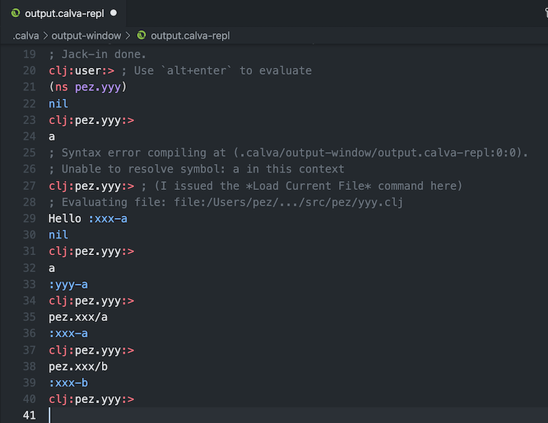
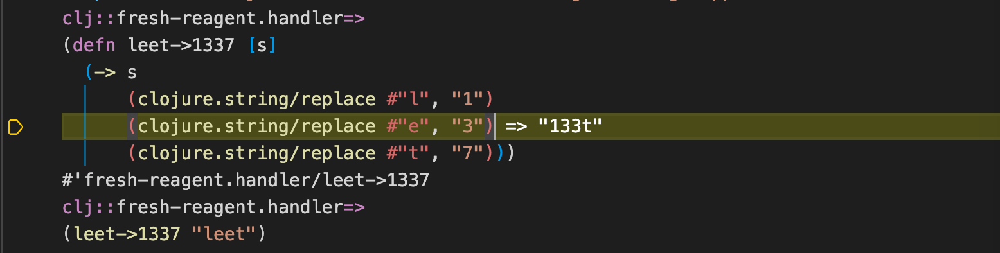

The Output/REPL Window/File
When Calva evaluates Clojure/ClojureScript code, the results are displayed inline as well as printed to the results output window/file. This file is created and opened when Calva is connected to a REPL.
In ClojureScript projects the window will be associated with the cljs REPL once this one is connected. It will then look something like so:

The first prompt is from when the clj REPL is connected, the second when Calva has a cljs REPL connection. The first part of the prompt tells you which REPL type the window is currently connected to. This gets important when the file/window is used as an interactive REPL.
Find the Output/REPL Window
If you quickly want to open and switch to the output window there is the command Calva: Show Output Window, ctrl+alt+o o.
To sync the Output/REPL window namespace with the current file before switching, use the Switch Namespace of the Output/REPL Window to Current Namespace command, ctrl+alt+c alt+n.
Find the File for the Current REPL Window Namespace
When you are working from the Output/REPL window, and want to open the file that defines its current namespace, use the Show File for the Current Output/REPL Window Namespace command, ctrl+alt+o o.
Note
This also works for Clojure core and library namespaces.
Evaluating Code
The window will be automatically associated with the REPL and the namespace of any project Clojure/ClojureScript file you evaluate code in. So for instance if you evaluate this code in a clj file with the namespace fresh-reagent.handler:
(def mount-target
[:div#app
[:h2 "Welcome to fresh-reagent"]
[:p "please wait while Figwheel is waking up ..."]
[:p "(Check the js console for hints if nothing exciting happens.)"]])
The output window will print the defined var and then a new prompt reflecting the current REPL connection and namespace:

If you then switch to the output window (ctrl+alt+o o), and enter this at the prompt:
mount-target
then evaluate it using alt+enter, you'll get:

This, since the namespace ”followed” the first evaluation over to the output window.
REPL History
Recently evaluated forms in the REPL file are persisted and can easily be shown again for modifying and re-evaluating.
Navigate REPL History
You can navigate up and down the last forms evaluated in the REPL file by using alt+up and alt+down, provided your cursor is at the end of the last form after the prompt. If the cursor is not at the end of the last form, then alt+up and alt+down will do what they are mapped to, which is by default "Move Line Up" and "Move Line Down," respectively.
If you have typed some text after the prompt before you start traversing up the history, this text will be preserved and will display when you traverse back down the history. If you modify some text in the history while traversing, the modification will be saved at that location in history.
Clear REPL History
You can clear the repl history by running the command "Clear REPL History" from the command palette.
Stack Traces
When an evaluation produces an error, the output window will automatically print the the error message. If there is a stack trace associated with the error, this can now be printed on demand using the Calva: Print Last Stacktrace to the Output Window command. The output window will also have a Codelense button below the error message that will print the stack trace..

For printed stacktraces, when source locations are available (Clojure files) you will be able to navigate to them by pressing ctrl+click (cmd+click on Mac) on the file name. You can also hover over symbols in the stack trace to see the symbol's documentation, and ctrl+click (cmd+click on Mac) the symbol to Peek Definition.

Load Current Namespace
When navigating namespaces it is easy to forget to first require them and that can be a bit tricky to fix. To help with this Calva's command Load/Evaluate Current File and its Requires/Dependencies also works in the output window, but then acts like Load Current Namespace.
Consider you have two files, pez/xxx.clj and pez/yyy.clj, where pez.yyy requires pez.xxx.
(ns pez.xxx)
(def a :xxx-a)
(def b :xxx-b)
(ns pez.yyy
(:require [pez.xxx]))
(def a :yyy-a)
(println "Hello" pez.xxx/a)
Then with a freshly jacked-in REPL you do (ns pez.yyy) and want to work with the vars defined there. Clojure will complain. But if you Load/Evaluate Current File and its Requires/Dependencies, it will start working. Something like so:

Note
This currently suffers from a limitation in Calva where it won't reload dependencies, so you will sometimes have to do this ”manually” anyway (by opening the files and loading them). See Calva issue #907
Peek Current Namespace
A somewhat hidden feature: You can see documentation for, peek and navigate to a namespace by hovering on the namespace symbol in one of the repl window prompts (just like you would if it was not in the prompt 😄).
Paredit Enabled
The output window is mostly a regular Calva Clojure/ClojureScript file, which make everything that works in a regular file work in this file, including Paredit. This makes it easy to navigate the input and output. For instance, to select the last evaluation results you can press ctrl+w (shift+alt+right on Windows and Linux):

Debugger Enabled
The output window is mostly a regular... (you get it), which means you also have the Calva debugger at your command at the REPL prompt (only for clj sessions, so far). So instead of evaluating a function definition using alt+enter you can evaluate it and instrument it for debugging using ctrl+alt+c i. Then call the function.

It is Ephemeral
The contents of the output/REPL window is written to a file named output.repl in the .calva/output-window directory of your project. The file is recreated at every new session. And you should copy anything you want to keep from this file to wherever you want to keep it.
You probably want to add .calva/output-window/ to your .<something>ignore files. (There are some more files in that directory that you shouldn't keep under source control.)
Choose CLJ or CLJS REPL Connection
In full stack projects, you will probably use the window as a REPL for both clj and cljs. You can toggle which REPL the window is connected to using the command Calva: Toggle REPL Connection for CLJC files. There is a button for this in the status bar:

Known Quirks
Due to limitations in the VS Code API it is hard for Calva to know if the output file is opened, and also if it is opened more than once. Make it a habit to leave this window opened. And if it is opened in several tabs, expect evaluation printouts to be a bit unpredictable.
If you save the output/REPL file (which most often does not make much sense, but anyway) you will sometimes be presented with a message about VS Code being confused about the file contents being out of sync. Just choose to Overwrite the currently saved version and you should be fine.